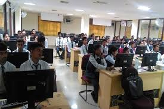

Colleges provide essential facilities such as libraries, laboratories, modern classrooms, and auditoriums for
learning. Sports facilities promote physical fitness, while cafeterias serve diverse meals. Student hostels
offer accommodation, and health centers and counseling services support well-being. These resources foster
academic success and personal growth in a vibrant campus community.
.jpg)
World Class Library
College libraries are key academic resources, offering books, journals, and digital materials. They
provide study spaces, research assistance, and host workshops and events. With remote access to
resources, they serve as vital hubs for learning and collaboration.

Next-Gen Technology Lab
College labs are essential for hands-on learning and skill development, providing practical
experience in research and collaboration. Equipped with specialized tools and mentorship, they
prepare students for future careers and promote innovation.
.jpg)
Sports Complex
A college sports complex promotes fitness and teamwork, featuring gymnasiums, athletic fields,
swimming pools, and courts for sports such as basketball, soccer,chess and tennis. It hosts
intercollegiate and intramural competitions while offering fitness classes and recreational
activities. This facility enhances student life by encouraging healthy lifestyles, sports
participation, and school spirit.
.jpg)
.jpg)